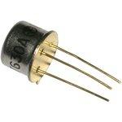

1.5.2. Устройство и принцип действия биполярных транзисторов

Биполярный транзистор представляет собой полупроводниковый прибор, имеющий два электронно-дырочных перехода, образованных в одном монокристалле полупроводника. Эти переходы образуют в полупроводнике три области с различными типами электропроводности. Одна крайняя область называется эмиттером (Э), другая — коллектором (К), средняя — базой (Б). К каждой области припаивают металлические выводы для включения транзистора в электрическую цепь. Электропроводность эмиттера и коллектора противоположна электропроводности базы. В зависимости от порядка чередования р- и n-областей различают транзисторы со структурой р-n-р (Рис. 5.1) и n-р-n (Рис. 5.2). Условные графические обозначения транзисторов р-n-р и n-р-n отличаются лишь направлением стрелки у электрода, обозначающего эмиттер.
Рис. 5.1. pnp-транзистор.
Рис. 5.2. npn-транзистор.
Конструкция биполярного транзистора
Для изготовления биполярного транзистора необходим полупроводник электронного или дырочного типов проводимости, который, методом сплавления или диффузии легируют акцепторными примесями так, чтобы по обе стороны от базы были выполнены зоны с противоположными типами проводимостей. Это отражено на упрощённой конструкции сплавного биполярного транзистора, приведённой на рис. 5.3.
Рис. 5.3. Конструкция биполярного транзистора
На рисунке 5.3 цифрами обозначены:
1 – коллектор;
2 – база транзистора (например, образованная кристаллом германия или кремния);
3 – основание компонента;
4, 5 – вплавленные в кристалл примеси (например, индия или алюминия);
6 – кристаллодержатель;
7 – эмиттер.
Кристалл полупроводника, образующий базу транзистора, в данном случае механически прикреплён и электрически соединён с металлической пластинкой, приваренной к стенке компонента.
Электронно-дырочный переход, образованный эмиттером и базой, называется эмиттерным, а коллектором и базой — коллекторным. Расстояние между переходами очень мало: у высокочастотных транзисторов оно менее 10 микрометров (1 мкм = 0,001 мм), а у низкочастотных не превышает 50 мкм.
Принцип работы транзисторов р-n-р и n-р-n одинаков, поэтому рассмотрим лишь работу транзистора со структурой р-n-р.
Рассмотрим процесс усиления электрического сигнала биполярным транзистором, для чего обратимся к рисунку 5.4, на котором изображено движение носителей заряда в транзисторе p-n-p структуры, включённом по схеме с общей базой. На нём протяжённости областей отражены без соблюдения масштаба и реальных размеров.
Рис. 5.4. Принцип работы биполярного (pnp) транзистора.
На рисунке 5.4 знаком плюса, обведённого в кружок, показаны дырки, а знаком обведённого в кружок минуса – электроны. В связи с тем, что в работе компонента участвуют и электроны, и дырки, такой транзистор именуют биполярным. Выводы база-эмиттер транзистора будем считать входом каскада, а выводы база-коллектор – его выходом.
Благодаря включению двух источников питания переход база-коллектор закрыт, а переход база-эмиттер открыт. Из-за этого по переходу база-эмиттер будет течь эмиттерный ток, порождённый движением преимущественно электронов. Он течёт по цепи от положительного полюса источника питания база-эмиттер, по резистору R1, от области эмиттера транзистора к области базы, а затем к отрицательному полюсу этого же источника питания. Резистор R1 символизирует внутреннее сопротивление источника сигнала. Направление протекания тока символически стрелками отражено на рисунке 5.4.
Эффективность инжекции характеризует коэффициент инжекции. В данном случае он равен отношению тока эмиттера, вызванного движением только основных носителей заряда, к полному току эмиттера, обусловленному миграцией и дырок, и электронов. Область базы обогащается инжектируемыми носителями заряда, которые в области эмиттера были основными, а в области базы стали неосновными. Поле коллекторного перехода является ускоряющим для попавших в область базы носителей зарядов, и это поле их втягивает в коллекторный переход. Происходит их рекомбинация с основными носителями заряда области базы. Однако она незначительна в связи с тем, что толщина области базы много меньше, чем двух других областей, и электроны почти беспрепятственно преодолевают область базы и оказываются в области коллектора, в которой они вновь станут основными носителями заряда. Успевшие рекомбинировать электроны вызывают протекание небольшого тока через вывод базы транзистора, который называют рекомбинационным. Рекомбинация некоторого количества носителей заряда в области базы происходит постоянно до тех пор, пока каскад не будет обесточен, так как электроны будут всё время поступать от положительного полюса источника питания база-эмиттер.
Обогащение области коллектора носителями заряда, которые в ней будут основными, приводит к протеканию коллекторного тока транзистора. Он течёт по цепи от положительного полюса источника питания база-коллектор, по области базы, затем по области коллектора, по нагрузочному резистору R2, к отрицательному полюсу источника питания.
Очевидно, что даже незначительное изменение напряжения база-эмиттер вызывает существенно большее изменение напряжения база-коллектор и, отдавая небольшую мощность управляющего сигнала, поданного на базу транзистора, можно управлять многократно большей мощностью нагрузки. Следовательно, рассматриваемый каскад может осуществить усиление сигнала по напряжению. Ток эмиттера транзистора при любом варианте включения последнего равен сумме токов коллектора и базы.
Посмотрите видео по данному вопросу